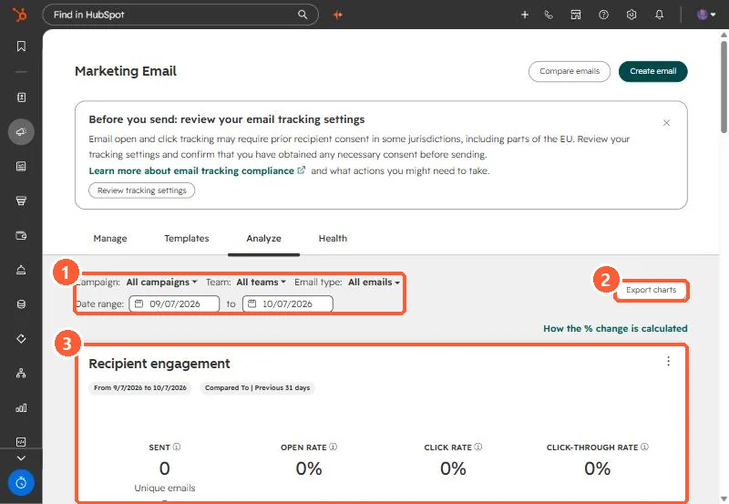

Short answer
Marketing, Email, Analyze tab reports across sends, with filters for campaign, team, email type and date range, and compares to the previous period of the same length. The Recipient engagement card shows sent, open rate, click rate and click-through rate. Compare emails puts selected emails side by side, and Export charts downloads the views.
1. The tab
My demo portal has sent nothing in the last 31 days, so the card reads zero.


2. Read it carefully
- Comparisons use the previous period of equal length. Check the date chips.
- Open rates are affected by privacy features. See the never-opened stat.
- Filter by email type so automated emails do not mix with one-off sends.
3. Compare
Use Compare emails, or open an email and choose Actions > Compare, to see two sends side by side. For sending reputation, see the Health tab.